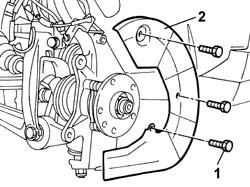

3310A59 Front brake DISC GUARD (one), left or right - R.R.
- Path
- Procedures > 33 BRAKES > 3310 DISC BRAKES > 3310A FRONT DISC BRAKES > 3310A59 Front brake DISC GUARD (one), left or right - R.R.
- Kind
- repair procedure (removal / refitting; the operation number is the code)
- Applies to
- all engines; all production periods
- Interactive page
- https://sloeber94.github.io/elrnDB-lThss/en/#/78517
Applies to: all engines; all production periods
 Removing
Removing
 Refitting
Refitting- Position the vehicle on a lift.
See in Op. 4450B10 Front WHEEL (one) - R.R.
See in Op. 3310A52 FRONT BRAKE DISCS - R.R. with brake calipers removed
1. Undo the fixing bolts.
2. Remove the front brake disc guard.

Applies to: all engines; all production periods
Refitting
Removing- Fit the front brake disc guard.
- Tighten the fixing bolts.
See in Op. 3310A52 FRONT BRAKE DISCS - R.R. with brake calipers removed
See in Op. 4450B10 Front WHEEL (one) - R.R.
- Remove the vehicle from the lift.